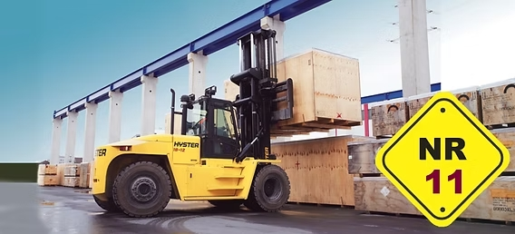

Nr 11 pá carregadeira- O curso de operação de pá carregadeira é uma formação profissional destinada a capacitar os trabalhadores para operar esse tipo de máquina de maneira segura e eficiente. A pá carregadeira é um equipamento pesado utilizado para carregar e movimentar materiais, como terra, areia, pedras, entre outros, em diversos tipos de obras e indústrias.

// NR-11
// O curso geralmente aborda os seguintes temas:
-
1. Legislação e normas de segurança:
- Estudo das normas regulamentadoras (principalmente a NR-12), que regulamentam a segurança na operação de máquinas e equipamentos.
- Procedimentos de segurança no trabalho para evitar acidentes com a pá carregadeira. -
2. Tipos de pá carregadeira:
- Conhecimento dos diferentes modelos de pá carregadeiras, com ênfase nas características e aplicações de cada um. -
3. Manutenção preventiva e cuidados com a máquina:
- Noções básicas de manutenção preventiva, como verificações diárias de segurança e cuidados com o equipamento antes de sua operação. -
4. Operação e manuseio:
- Técnicas de operação da pá carregadeira, como o manuseio de materiais (terreno, pedras, areia, etc.), movimentação e transporte de cargas.
- Capacitação para realizar manobras com segurança, incluindo operação em diferentes terrenos e condições adversas. -
5. Procedimentos de carga e descarga:
- Ensino sobre como carregar e descarregar materiais de maneira eficiente, respeitando os limites de carga da máquina. -
6. Prevenção de acidentes e segurança no ambiente de trabalho:
- Como evitar acidentes com o uso da pá carregadeira, tanto com a máquina quanto com as pessoas ao redor.
- Uso de equipamentos de proteção individual (EPIs) e a importância de sua utilização durante a operação. -
7. Identificação de sinais e comandos:
- Compreensão dos sinais e comandos utilizados para guiar a operação, incluindo comunicação com outros operadores ou profissionais no local de trabalho. -
8. Avaliação prática e teórica:
- Avaliações teóricas e práticas para testar o conhecimento e as habilidades adquiridas pelos alunos.
// Duração e certificação:
O curso costuma ter uma carga horária de 16 a 40 horas, dependendo da instituição, sendo a formação dividida entre teoria e prática. Ao final, o aluno recebe um certificado de capacitação, que valida sua aptidão para operar a pá carregadeira de acordo com as exigências legais.
Os cursos de operação de pá carregadeira podem ser realizados em escolas técnicas, empresas de treinamento especializado ou em instituições de ensino profissionalizante, sendo importante que o curso seja reconhecido e certificado de acordo com as normas de segurança do trabalho.